Best Gardens
Australia
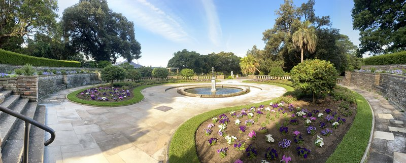
Royal Botanic Garden Sydney
Sydney, Australia
A harbourside botanical garden next to the Opera House, established in 1816 as one of Australia's oldest scientific institutions, with themed gardens and sweeping views of the harbour.
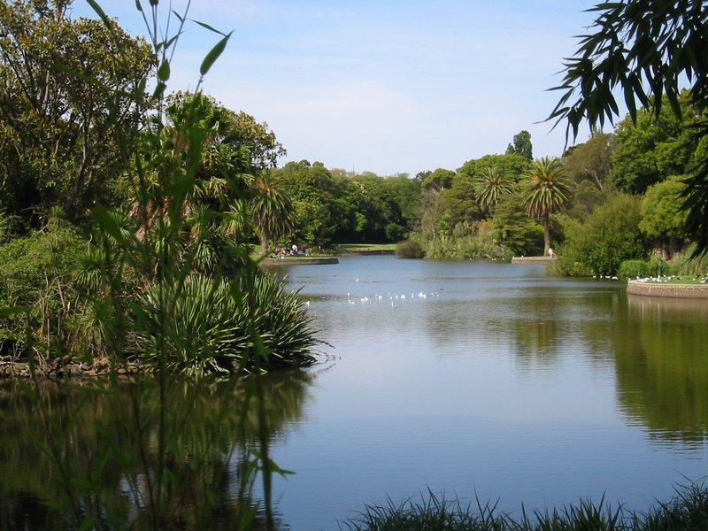
Royal Botanic Gardens Melbourne
Melbourne, Australia
A 19th-century botanical garden beside the Yarra River, laid out in a landscaped style around ornamental lakes, with themed beds and a large collection of plants from around the world.
Austria
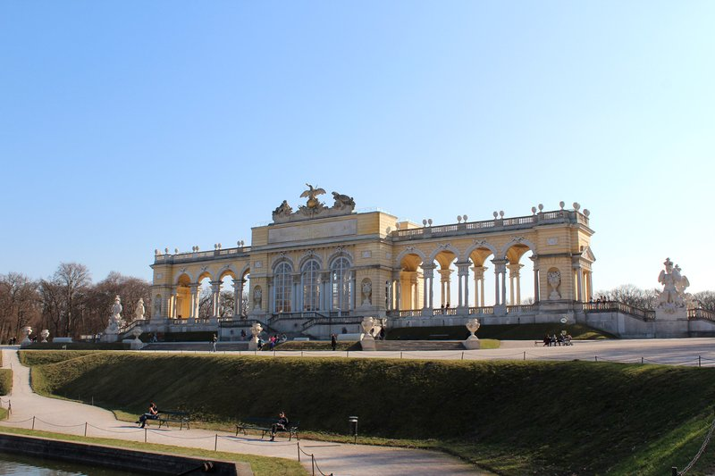
Schönbrunn Palace Gardens
Vienna, Austria
The Baroque gardens of the former Habsburg summer residence, with symmetrical parterres rising to the Gloriette hilltop pavilion, plus a maze and one of the world's oldest zoos.
Brazil
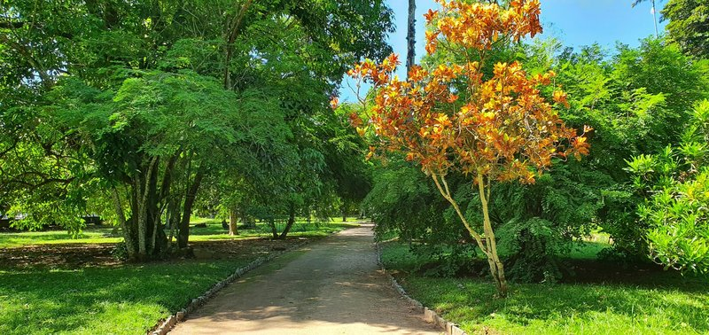
Jardim Botânico
Rio de Janeiro, Brazil
Rio's botanical garden, founded in the early 19th century, noted for its long avenue of towering royal palms, orchid houses, and collections of Brazilian and tropical plants.
Canada
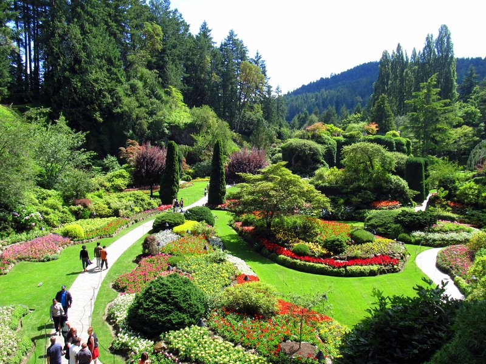
Butchart Gardens
Brentwood Bay, British Columbia, Canada
A display garden created in a former limestone quarry near Victoria, with a Sunken Garden, rose garden, and Japanese and Italian gardens; a designated National Historic Site of Canada.
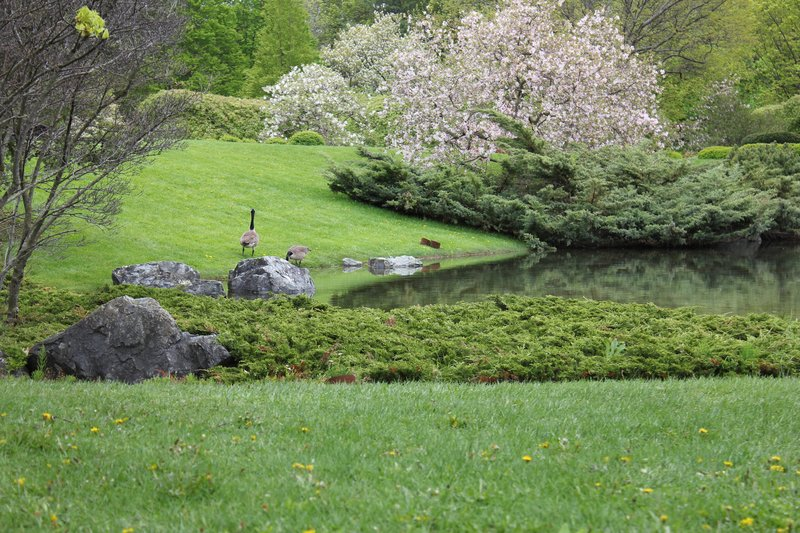
Montreal Botanical Garden
Montreal, Canada
One of the largest botanical gardens in the world, with themed outdoor gardens and greenhouses, notably its Chinese and Japanese gardens and a fall Gardens of Light lantern event.
China
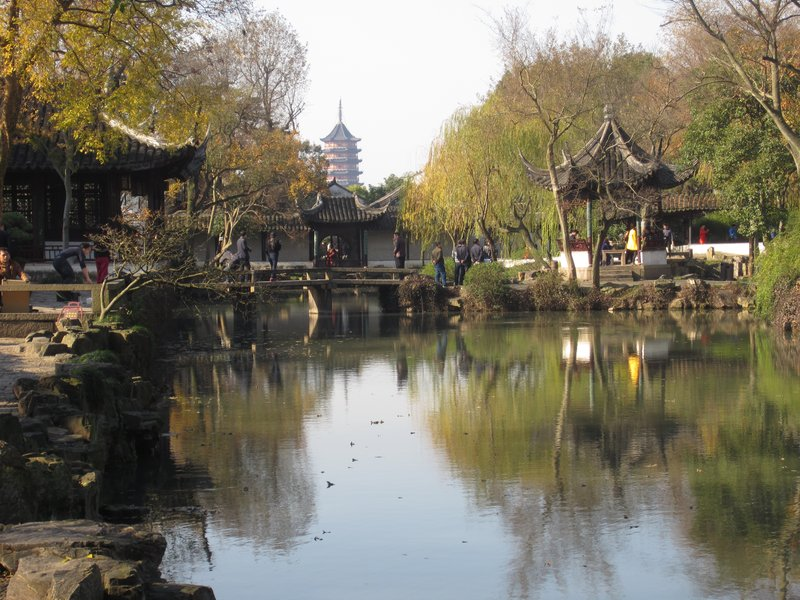
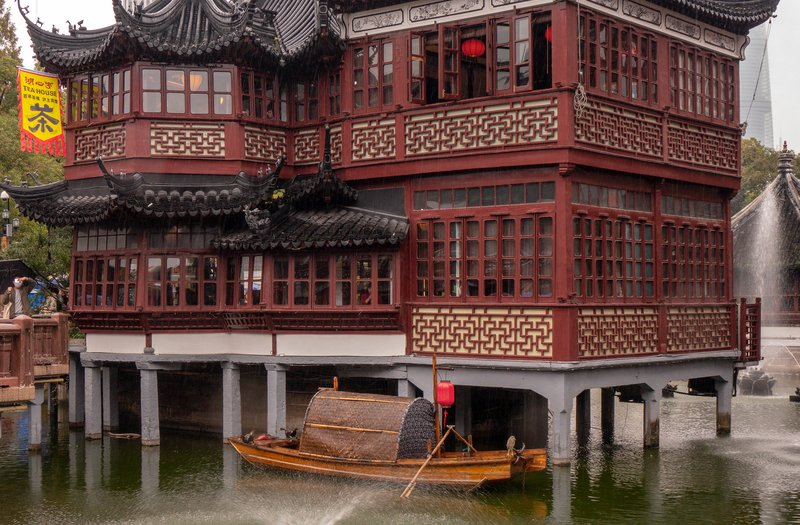
Yu Garden (Yuyuan)
Shanghai, China
A classical Chinese garden in Shanghai's old city dating from the Ming dynasty, packed with rockeries, halls, ponds, and a dragon-topped wall within a compact walled layout.
Colombia
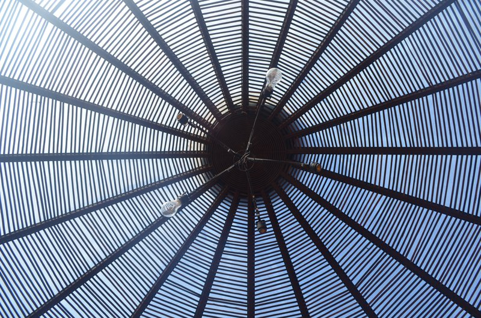
Jardín Botánico de Bogotá
Bogotá, Colombia
Colombia's largest botanical garden, focused on high-altitude Andean and páramo ecosystems, with greenhouses and collections representing the country's varied plant life.
France
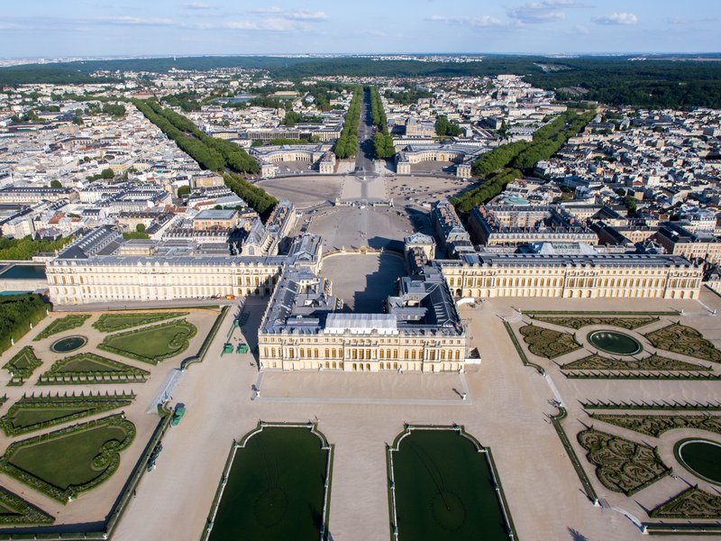
Gardens of Versailles
Versailles, France
The formal gardens of the royal palace, laid out by André Le Nôtre in the 17th century as the definitive French formal garden, with geometric parterres, canals, and elaborate fountains.
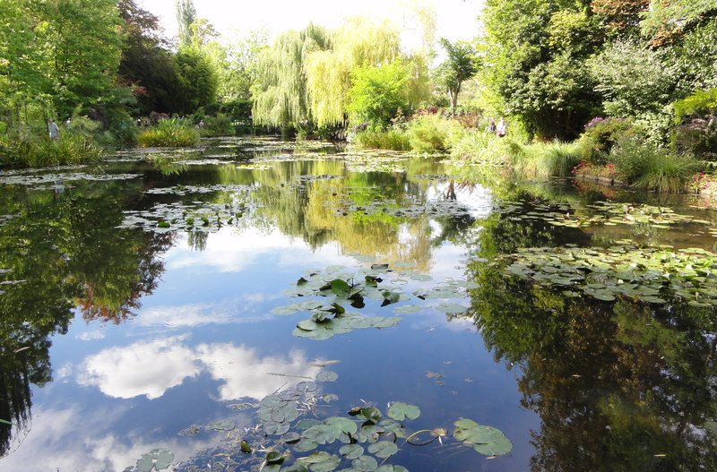
Monet's Garden
Giverny, France
The home and garden of painter Claude Monet, comprising a flower garden and a Japanese-inspired water garden whose lily pond and green bridge inspired his Water Lilies series.

Jardin des Plantes
Paris, France
France's main botanical garden, founded in the 17th century as a royal medicinal herb garden and now part of the National Museum of Natural History, with greenhouses and a small zoo.
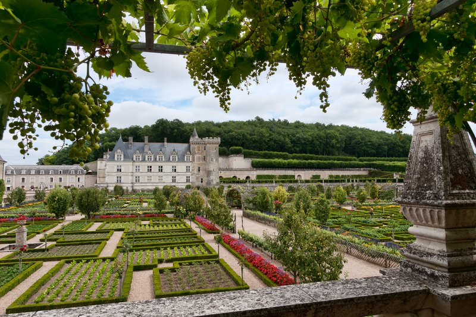
Château de Villandry
Villandry, Loire Valley, France
A Renaissance château famous for its meticulously restored gardens arranged in geometric terraces, including an ornamental kitchen garden that patterns vegetables and herbs like a tapestry.
Germany
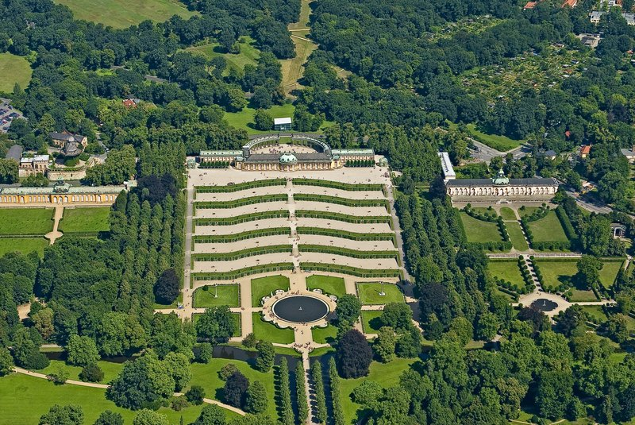
Sanssouci Park
Potsdam, Germany
The extensive park surrounding Frederick the Great's Rococo summer palace, with terraced vineyards, fountains, and formal gardens dotted with palaces and pavilions.
India
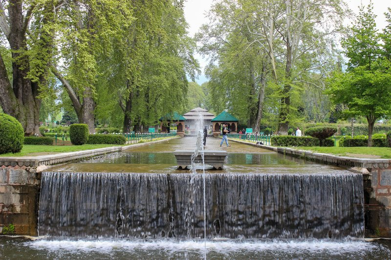
Iran
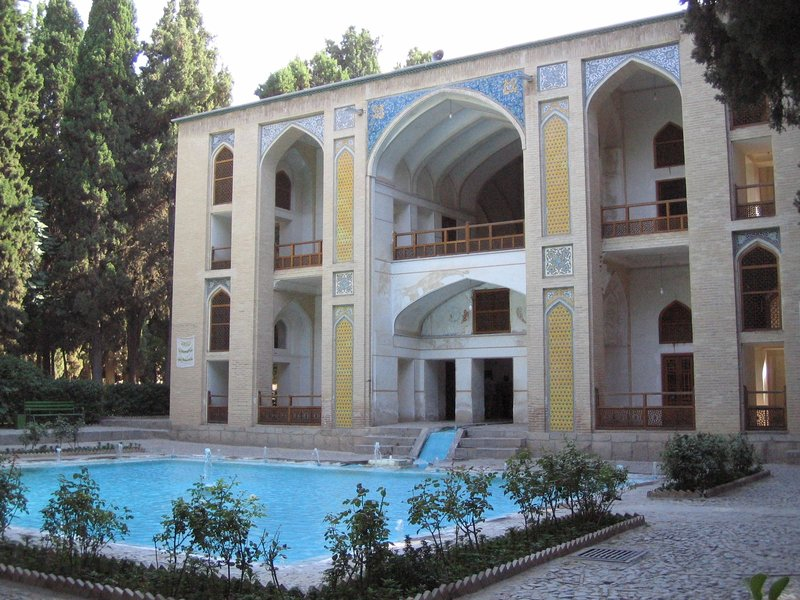
Ireland
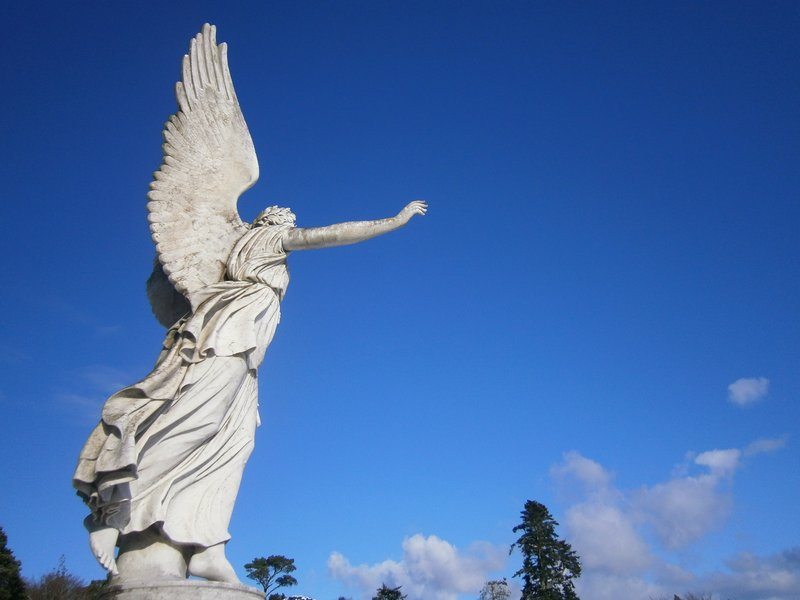
Powerscourt Gardens
Enniskerry, County Wicklow, Ireland
Formal terraced gardens on a grand 18th- and 19th-century estate in the Wicklow Mountains, blending Italianate terraces, ornamental lakes, and walled gardens against a mountain backdrop.
Italy
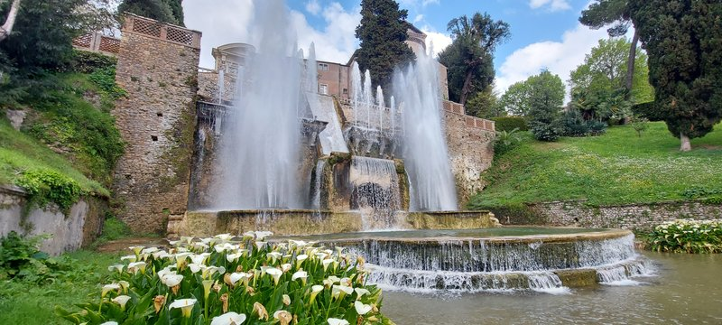
Villa d'Este
Tivoli, Italy
A UNESCO-listed Renaissance villa near Rome, celebrated for its terraced hillside garden of fountains, water cascades, and pools fed entirely by gravity, a model for later European gardens.
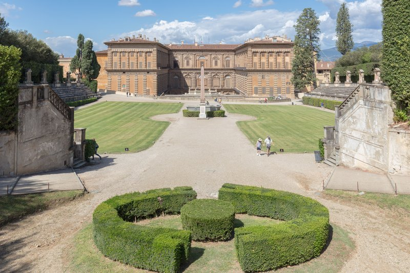
Boboli Gardens
Florence, Italy
Historic Medici gardens behind the Pitti Palace, an early example of the formal Italian garden with terraces, sculpture, grottoes, and avenues arranged across a Florentine hillside.
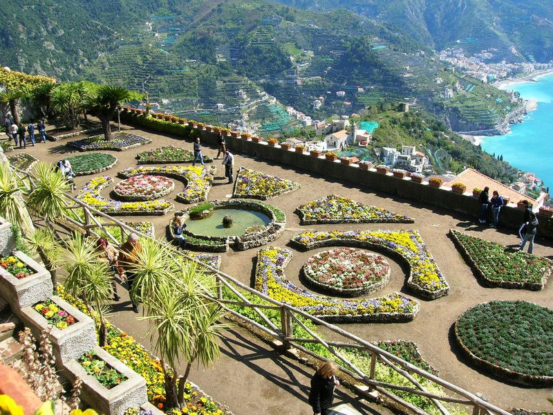
Villa Rufolo & Villa Cimbrone
Ravello, Amalfi Coast, Italy
Two clifftop villa gardens high above the Amalfi Coast, offering panoramic sea views from terraces and belvederes; Villa Rufolo's grounds are said to have inspired Wagner.
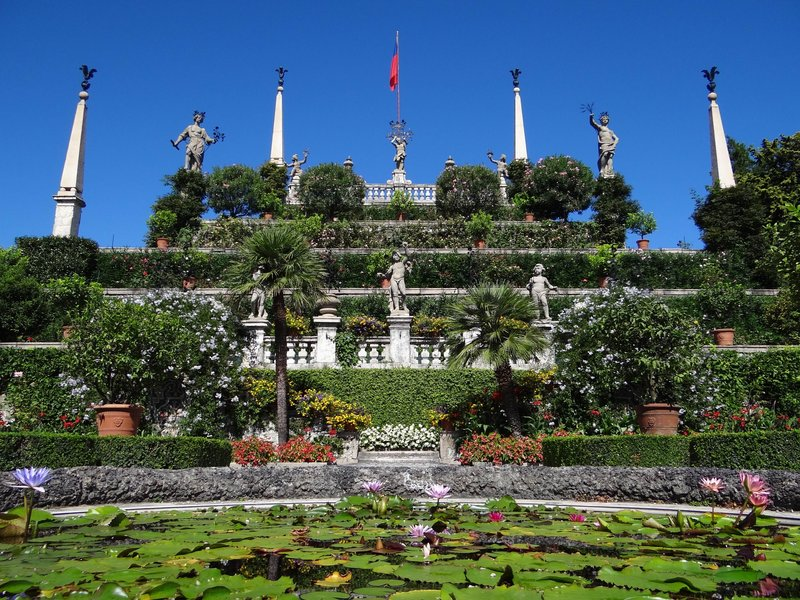
Isola Bella Gardens
Lake Maggiore, Italy
A Baroque terraced garden covering a small island on Lake Maggiore, built by the Borromeo family with tiered stone terraces, statuary, and resident white peacocks.
Japan
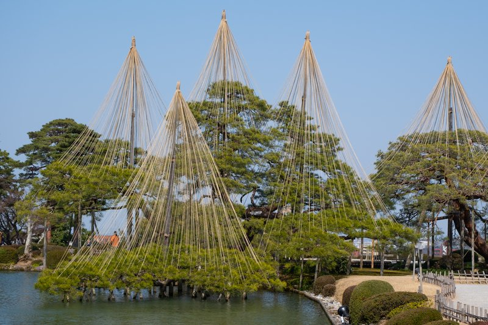
Kenroku-en
Kanazawa, Japan
Considered one of Japan's three great landscape gardens, a former feudal-lord garden with ponds, streams, teahouses, and winter rope supports that protect its pines from snow.
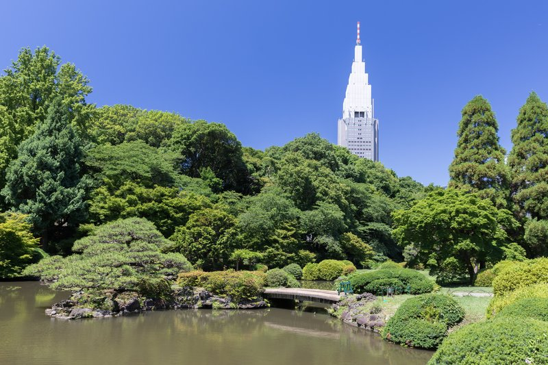
Shinjuku Gyoen
Tokyo, Japan
A large former imperial garden in central Tokyo combining Japanese landscape, formal French, and English gardens, and a popular spot for cherry-blossom viewing in spring.
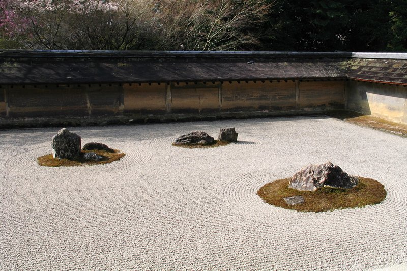
Ryōan-ji
Kyoto, Japan
A Zen temple famous for its dry rock garden, where fifteen stones sit on raked white gravel; the minimalist arrangement is among the best-known examples of Japanese Zen design.
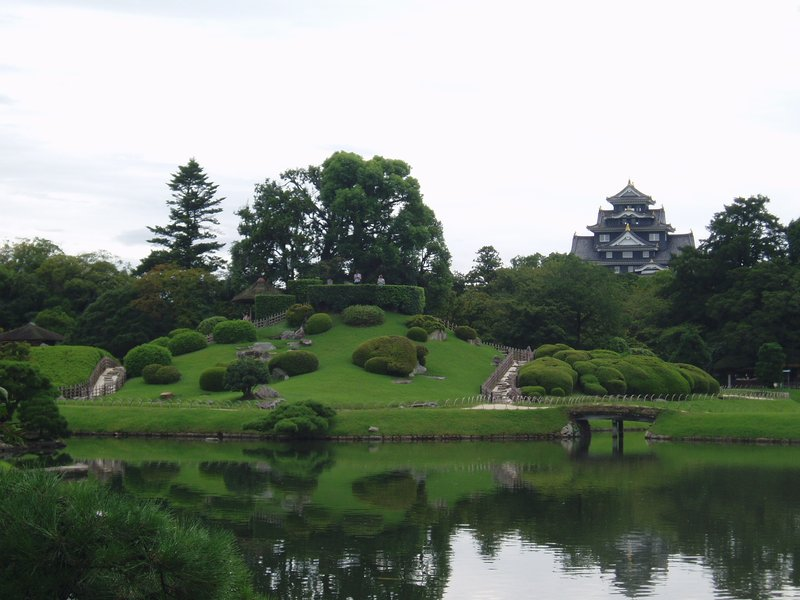
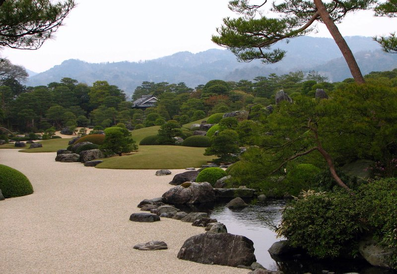
Adachi Museum of Art Garden
Yasugi, Shimane, Japan
A meticulously maintained garden attached to an art museum, designed to be viewed like a living painting through the building's windows; repeatedly ranked among Japan's finest gardens.
Morocco
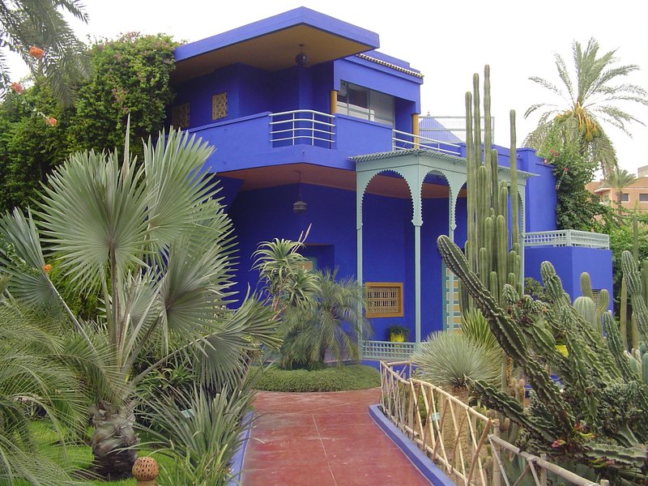
Jardin Majorelle
Marrakech, Morocco
A compact botanical garden created by painter Jacques Majorelle and later owned by Yves Saint Laurent, known for its cobalt-blue buildings amid cacti, bamboo, and palms.
Netherlands
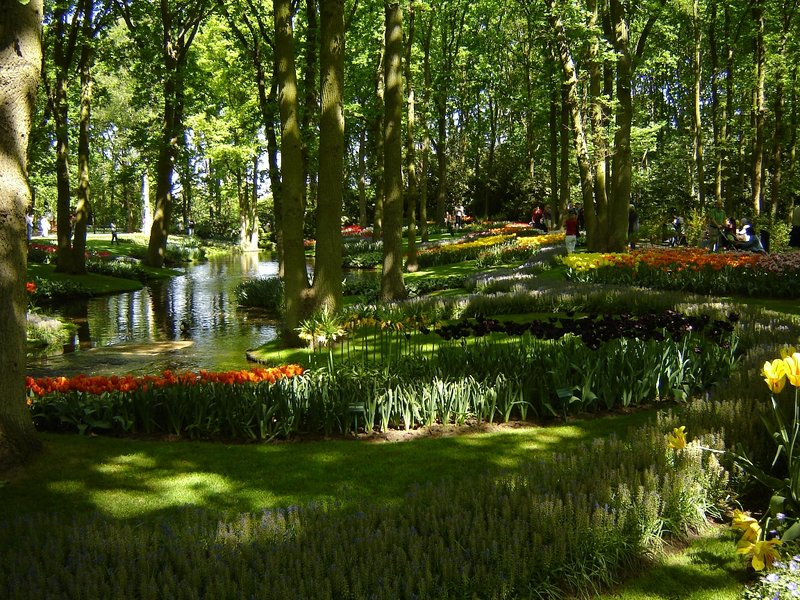
Keukenhof
Lisse, Netherlands
A spring-only flower garden in the bulb-growing region, planted each year with millions of tulips, daffodils, and hyacinths across landscaped grounds and themed pavilions.
Russia
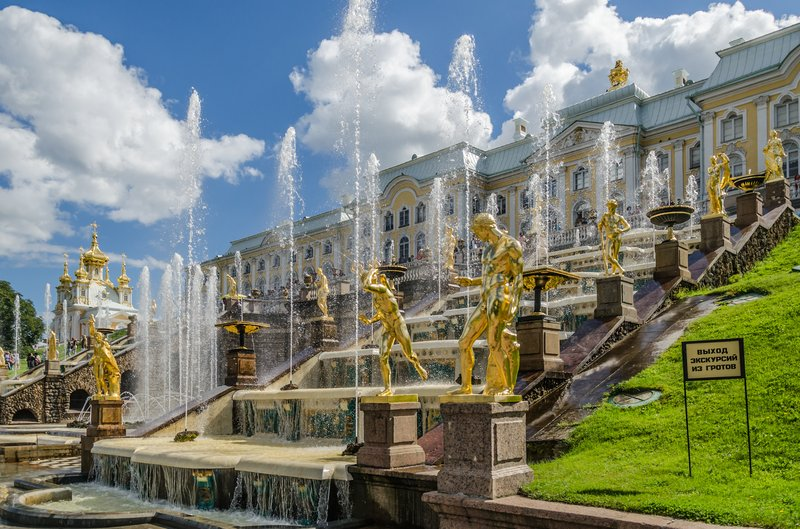
Peterhof Palace Gardens
Petergof, Saint Petersburg, Russia
An imperial palace and park on the Gulf of Finland, famed for its Grand Cascade and gilded fountains powered by a gravity-fed water system without pumps.
Singapore
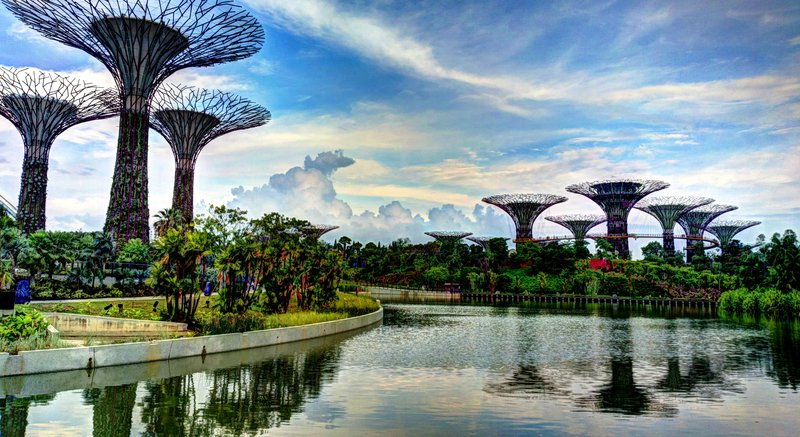
Gardens by the Bay
Singapore
A modern nature park by Marina Bay, known for its tree-like vertical gardens called Supertrees and two climate-controlled conservatories housing cloud-forest and dry-region plants.
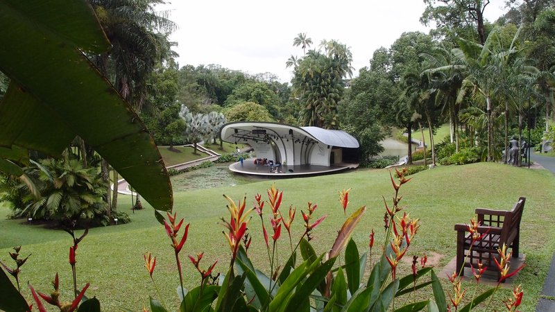
Singapore Botanic Gardens
Singapore
A UNESCO World Heritage tropical garden dating to the 1850s, with rainforest remnants, ornamental lakes, and a National Orchid Garden holding thousands of orchid varieties.
South Africa
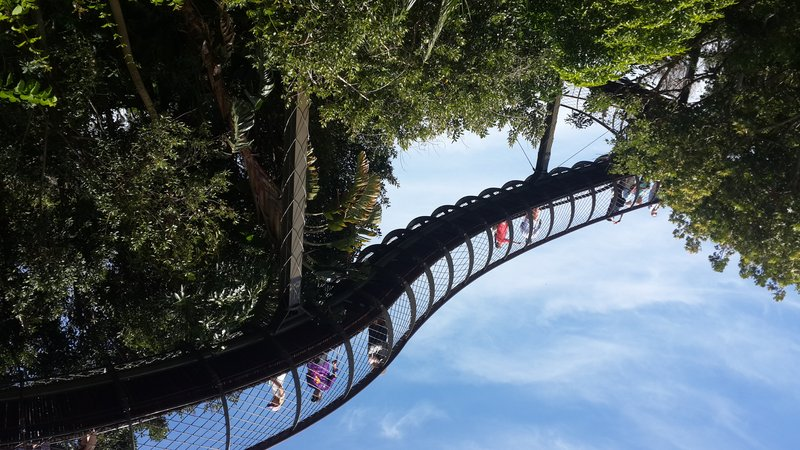
Kirstenbosch National Botanical Garden
Cape Town, South Africa
A botanical garden on the eastern slopes of Table Mountain devoted to native South African flora, including fynbos and proteas, with a canopy walkway among the treetops.
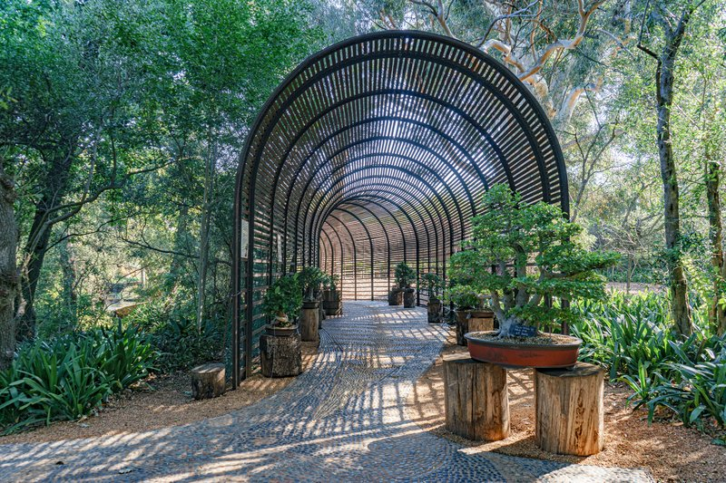
Spain

Generalife Gardens
Granada, Spain
The garden estate of the Nasrid sultans beside the Alhambra, an emblematic Moorish garden of courtyards, channels, and fountains where water and greenery define the design.
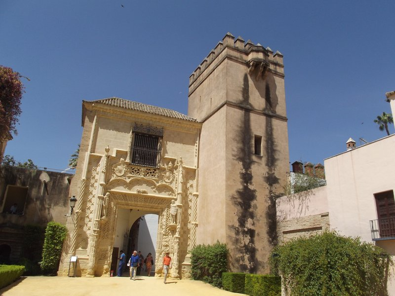
Real Alcázar Gardens
Seville, Spain
The gardens of Seville's royal palace, layered over centuries of Moorish and later Spanish design, with tiled courtyards, pavilions, pools, and orange trees behind the Alcázar walls.
Thailand
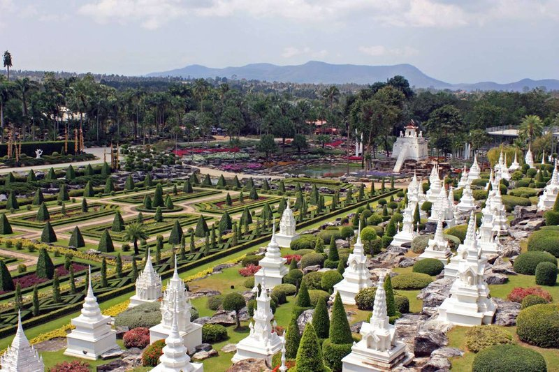
Nong Nooch Tropical Garden
Pattaya, Thailand
A large tropical botanical park near Pattaya combining themed formal gardens, one of the world's major cycad and palm collections, and cultural shows and elephant displays.
United Kingdom
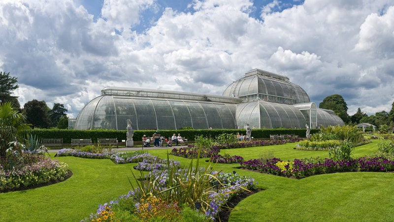
Royal Botanic Gardens, Kew
London, England
A UNESCO World Heritage botanical research institution on the Thames, holding one of the world's largest plant collections, Victorian glasshouses, and a treetop walkway.
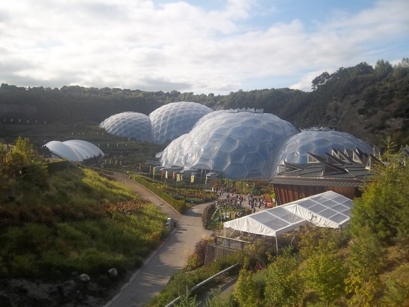
Eden Project
Cornwall, England
A visitor attraction built in a reclaimed clay pit, with giant geodesic domes housing rainforest and Mediterranean biomes that recreate distinct global climates and plant communities.
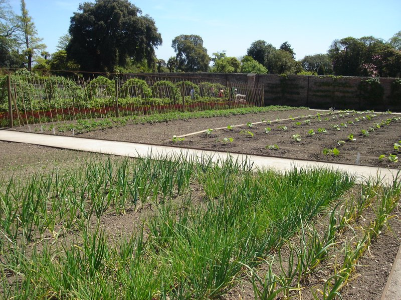
Lost Gardens of Heligan
Mevagissey, Cornwall, England
A historic estate garden that fell into neglect after the First World War and was restored in the 1990s, known for its productive kitchen gardens and subtropical jungle valley.
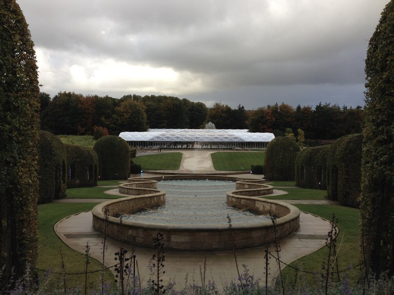
Alnwick Garden
Alnwick, Northumberland, England
A contemporary formal garden beside Alnwick Castle, centred on a large cascade fountain and known for its enclosed Poison Garden of toxic and dangerous plants.
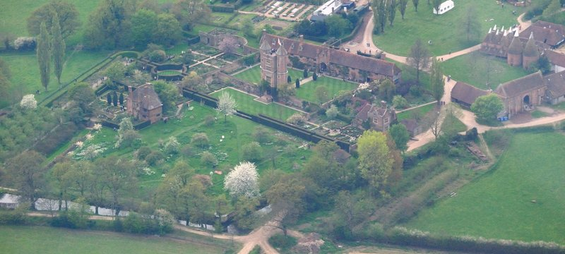
Sissinghurst Castle Garden
Cranbrook, Kent, England
An influential English garden created around an Elizabethan tower by Vita Sackville-West and Harold Nicolson, designed as a series of themed garden rooms including its celebrated White Garden.
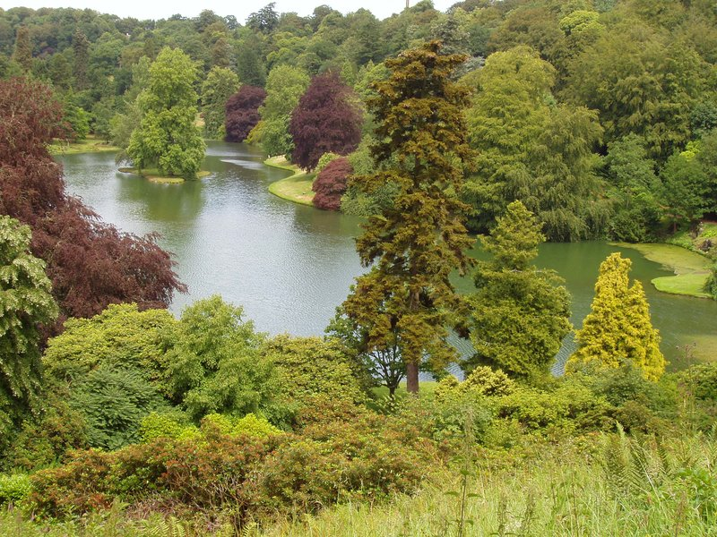
Stourhead
Wiltshire, England
A landscape garden laid out in the 18th century around a lake, with classical temples, grottoes, and a circular walk regarded as a landmark of English picturesque design.
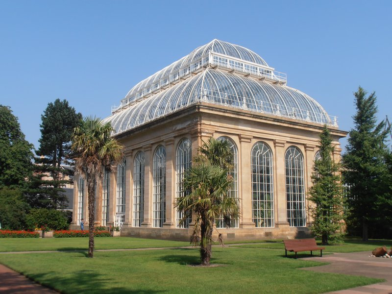
Royal Botanic Garden Edinburgh
Edinburgh, Scotland
One of the oldest botanical gardens in Britain, a leading centre for plant science with extensive glasshouses, a noted rock garden, and a large collection of Himalayan and Chinese plants.
United States
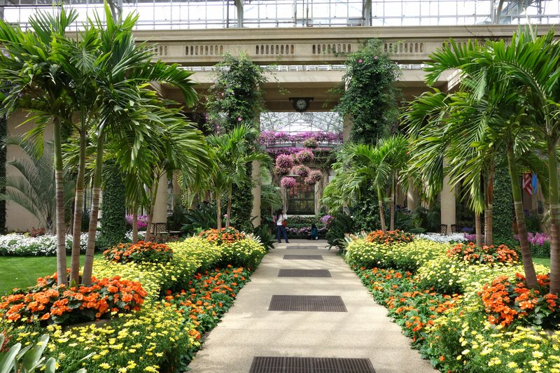
Longwood Gardens
Kennett Square, Pennsylvania
A former du Pont estate that is one of America's premier display gardens, known for its grand conservatory, illuminated fountain performances, and elaborate seasonal flower shows.
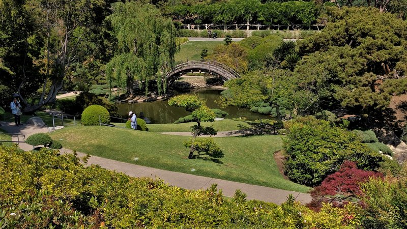
Huntington Library & Botanical Gardens
San Marino, California
A research library, art collection, and botanical garden near Los Angeles, with themed grounds including a large desert garden and classical Japanese and Chinese gardens.
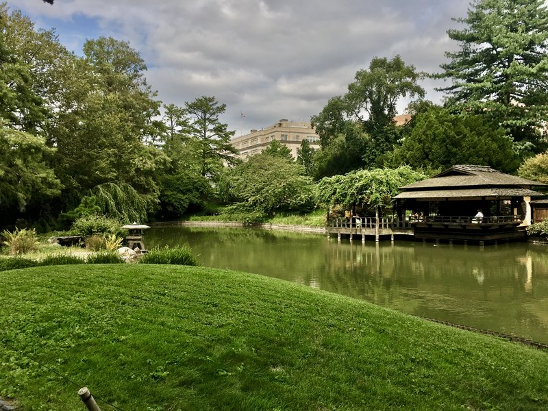
Brooklyn Botanic Garden
Brooklyn, New York
An urban botanical garden in Brooklyn, known for its Japanese Hill-and-Pond Garden, cherry esplanade, and a spring cherry-blossom festival, alongside rose and native-flora gardens.
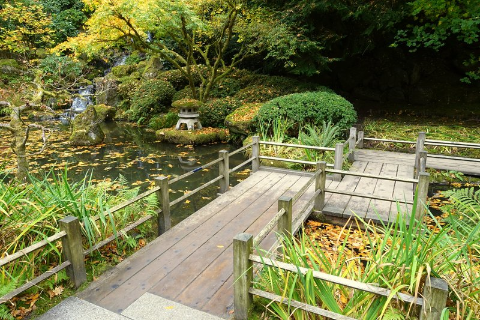
Portland Japanese Garden
Portland, Oregon
A hillside Japanese garden widely regarded as one of the most authentic outside Japan, combining several traditional garden styles among the trees of Washington Park.
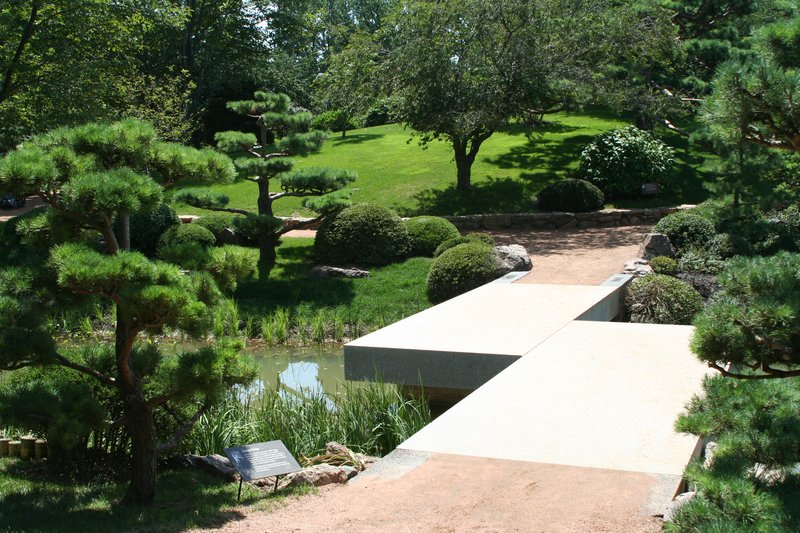
Chicago Botanic Garden
Glencoe, Illinois
A botanical garden north of Chicago spread across a series of islands and lagoons, with more than two dozen themed display gardens including a Japanese garden and an English walled garden.